baa4d0a4 → 8dcd4758): кабинет компании (эндпоинты,
layout, редизайн списка), дашборд, трекер истории рейсов, две правки cargo-create, чат-удаление/закрепление
и три задачи по админ-водителям. Все скриншоты ниже — реальный Playwright-прогон на STAGING
(admin + yuk-menejer сессии; кабинет компании — реальные компоненты приложения на застабленном по live-спеке API).
1 Кабинет компании: подключены live-эндпоинты, автопарк скрыт для грузоотправителя, редизайн списка FEATURE
На /company/:companyId дозаписаны 13 эндпоинтов live-спеки, которые были объявлены,
но не использовались: собственные офферы по грузам, назначение/отмена/оценка водителя в рейсе,
платежи по рейсу, дебиторка + экспорт + PDF-инвойс в финансах, композитный дашборд, квоты,
деактивация/активация/куратор груза, правка расходов, поиск сотрудников. Вся спорная логика —
в чистых модулях с юнит-тестами (companyPayments.ts, companyDashboard.ts,
companyCargoActions.ts, дополнения в companyFinance.ts/companyTrips.ts).
Ключевая правка — скрытие автопарка для компаний-грузоотправителей (SHIPPER): fleet-эндпоинты
отклоняют SHIPPER (company_type_forbidden), а права владельца «fail open», поэтому раньше
SHIPPER-владелец видел вкладки автопарка и упирался в 403. Теперь секция гейтится по типу компании
(forbiddenForTypes: ['SHIPPER']), а deep-link ?tab=vehicles откатывается на обзор.
Список компаний (/company) переверстан в сетку карточек с акцентом по типу перевозки.
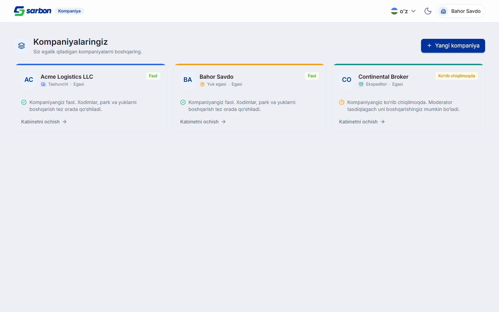

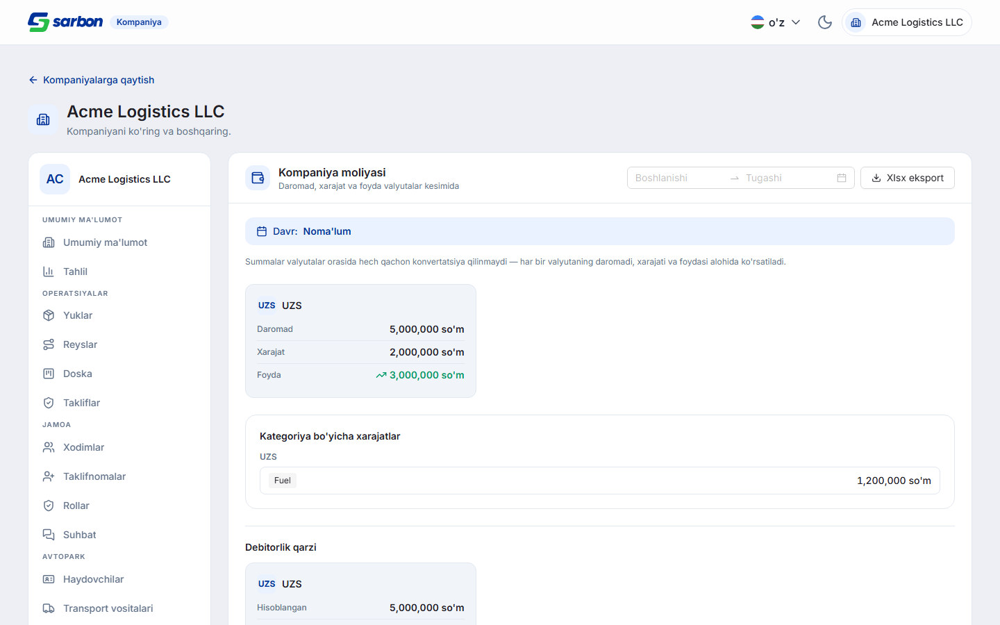
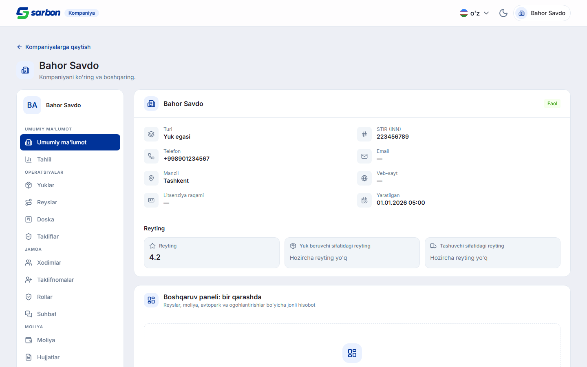
2 Кабинет компании — UI-полировка: скролл наверх, полная ширина, иконки сегмента FIX
Три правки внешнего вида: (1) переключение раздела в боковом меню теперь скроллит страницу наверх
(уважая prefers-reduced-motion) — раньше позиция скролла оставалась в середине предыдущего
длинного раздела; (2) контент раскрыт на полную ширину контейнера (≈95vw), левый край бокового меню
выровнен под логотипом (было центрирование max-w-7xl); (3) сегмент «Тягачи / Прицепы» в разделе ТС
теперь рисует lucide-иконки внутри лейбла (inline-flex) — раньше через option.icon AntD
они стояли криво. Шапка бокового меню сведена к аватар + название компании.
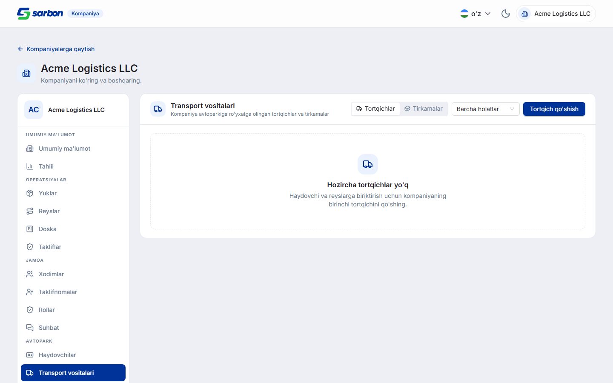
3 Дашборд «Грузы и предложения»: значения на столбцах + группировка день/неделя/месяц FEATURE
На карточке активности добавлены числовые подписи над столбцами (recharts LabelList,
нули скрыты, чтобы не засорять), и переключатель день / неделя / месяц прямо в карточке рядом с
«линия / столбцы». Пере-агрегация — на клиенте (bucketTimelineRows, группировка по
dayjs().startOf(unit)), причём укрупнять можно только от гранулярности, которую вернул API
(availableActivityBuckets отфильтровывает более мелкие бакеты). Вид по умолчанию переключён
на «столбцы», чтобы подписи были видны сразу.
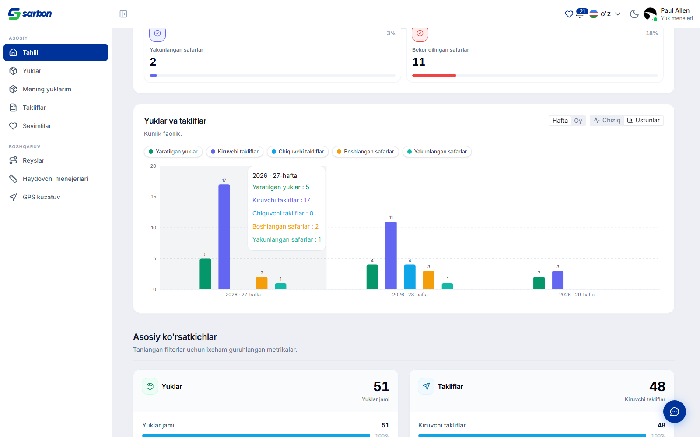
4 Рейсы → История: различие бейджей Event/Status + номера шагов + иконка итога в шапке FIX
По ре-репорту SARB-FRONT на трекере /v1/dispatchers/trips/history: (1) два бейджа
(«событие» и «статус») получили всегда видимые надписи-эйбрау «Event» / «Status» вместо
hover-подсказок; (5) счётчик шагов стал видимой подписью (без некорректных склонений по количеству).
Затем — вторая правка по обратной связи: каждый шаг-кружок теперь показывает свой номер
(последний шаг — не галочка, отменённый — не крестик), а иконка итога — эмеральд-галочка при завершении
/ красный крестик при отмене — переехала в шапку; счётчик «Total steps» убран. Дублирующаяся дата
события/статуса для терминальных шагов больше не показывается дважды.
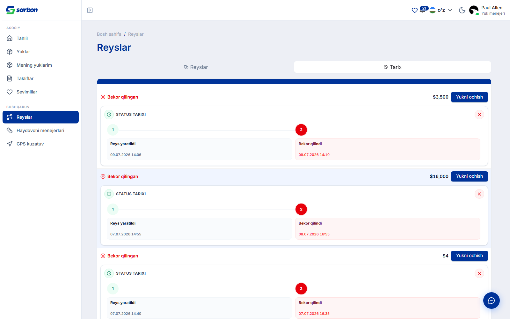
5 Создание груза: температура только для рефрижератора + чекбокс ASAP снимает ошибку FIX
Две правки формы /cargo-create:
- Температура (temp_min/temp_max) раньше вводилась при любом типе прицепа, и бэк отклонял отправку
400 temp_* require refrigerator. Теперь поле и тумблер «Добавить температуру» гейтятся наisReeferTrailerType, и — что важнее —buildCargoUpsertPayloadвырезает temp-поля из запроса для не-рефрижератора, даже если в форме остались устаревшие значения. Правка покрывает и ручную форму (Step 3), и AI-создание. - Шаг 2 (Маршрут): отметка «как можно скорее» на адресе выгрузки теперь снимает красную ошибку
обязательной даты доставки — валидатор читает
asapсвежим значением, аonChangeчекбокса ре-валидирует поле (черезvalidateFields, чтобы очистился и красный маркер шага-таба).
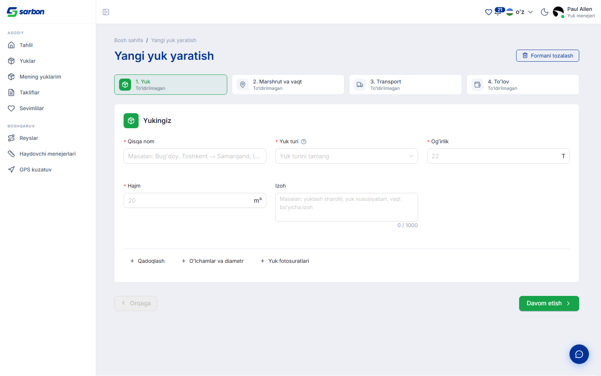
6 Админ · Водители — серверная фильтр-панель FEATURE
Список /admin/drivers переведён с клиентской фильтрации на серверную
(GET /v1/admin/drivers): поиск + селекты work_status / account_status / driver_type /
trailer_plate_type + три-стейт online / has_trips / has_offers + work_state (ON_TRIP/FREE) + UUID компании/фрилансера,
всё комбинируется AND в одном запросе с сортировкой и постраничкой (20/50/100/200). Отдельно —
мягкая обработка 400: lastGood-реф держит предыдущую удачную страницу, поэтому при ошибке
показывается инлайн-алерт с ретраем, а таблица не мигает пустотой. Кнопка «Очистить» со счётчиком активных фильтров.
Логика в чистом adminDriverFilters.ts (11 тестов).
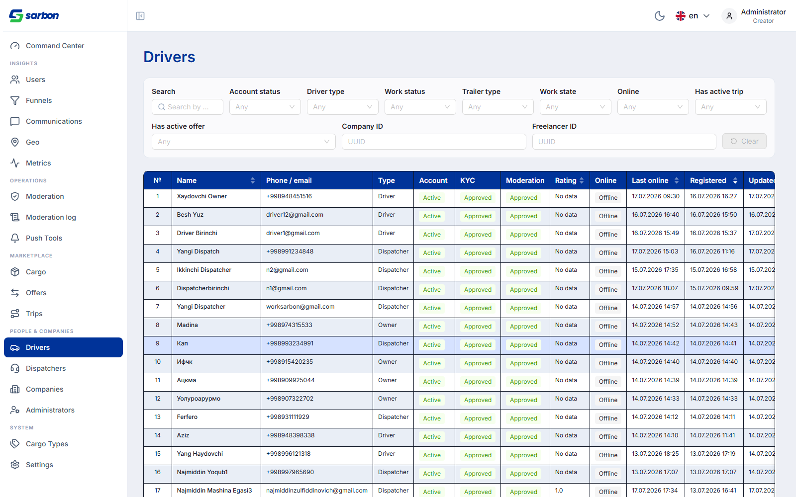
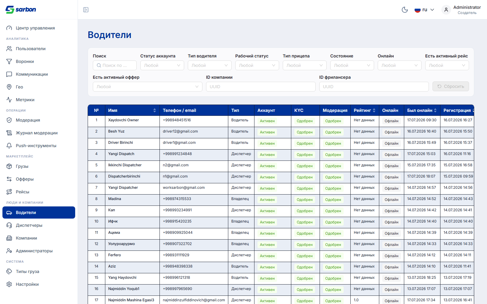
7 Админ · Правка водителя — статус-зависимый выпадающий список + гейт по статусу/роли FIX
Две связанные правки модалки «Edit driver»:
- Выпадающий «Account status» показывал все действия независимо от текущего статуса — заблокированному
водителю всё равно предлагали «Активировать» (нелогично + 409). Теперь
availableModerationActionsстатус-зависима: blocked → только Unblock, active → только Block, inactive → только Activate. Та же правка закрывает утечку activate-on-blocked в кебабе журнала модерации. - Гейт полей по модерации/роли: паспорт/транспорт read-only и не отправляются при
moderation_status='approved'; вся форма редактируется только в статусе pending/rejected (иначе — инфо-алерт «Editable only while under moderation» и заблокированный Save); смена account_status доступна только ролям creator/seo/moderator (с всегда-видимой подписью-причиной). Бэковые 409/403 теперь локализованы.
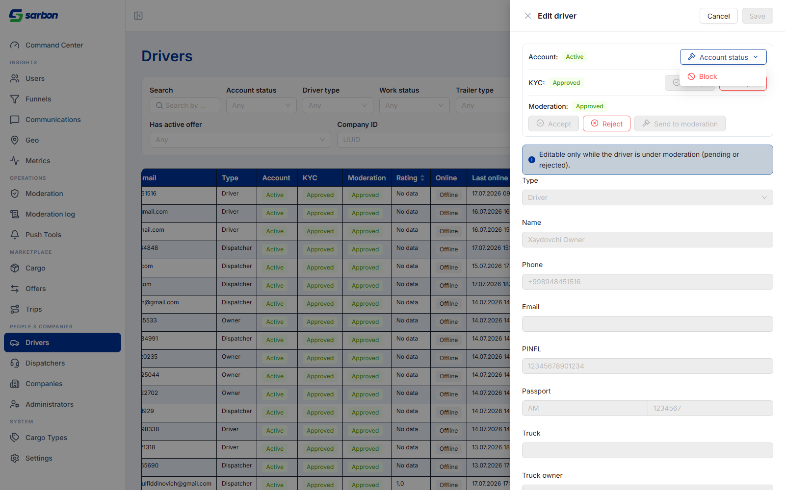
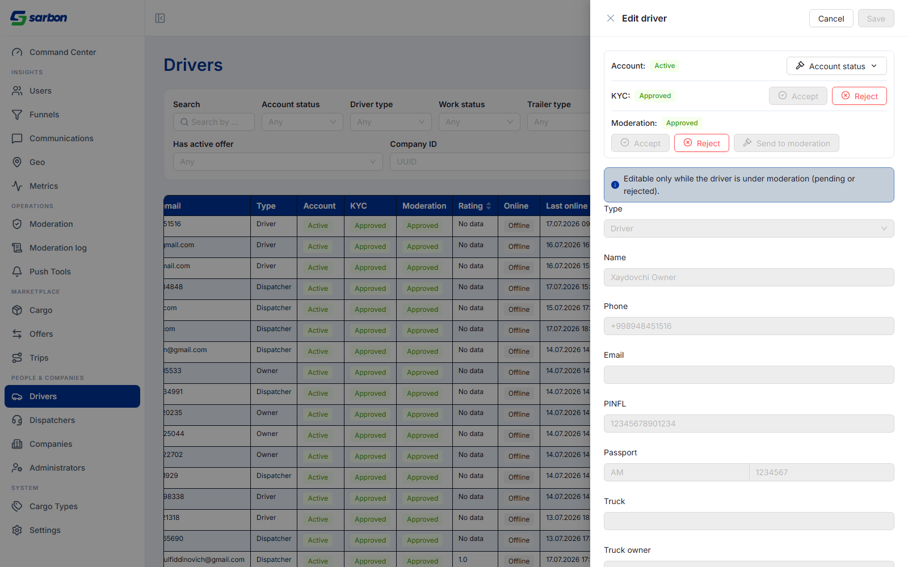
8 Чат — удаление беседы (только у текущего пользователя) + закрепление FEATURE
В чат добавлено удаление беседы (DELETE /v1/chat/conversations/:id): скрывает беседу
только у текущего пользователя — у собеседника чат остаётся, новое сообщение снова его поднимает;
404 трактуется как идемпотентное «уже скрыто» (нейтральное уведомление, не ошибка), остальные машинные
токены ошибок локализованы. Плюс закрепление бесед — фронтовое, персистится по id пользователя
(useChatPinsStore + chatPins.ts, устойчивый парс: порча блоба деградирует в пустой
набор, а не роняет список). Оба действия — в кебабе строки беседы. Покрыто deleteConversation.test.ts
+ chatPins.test.ts.
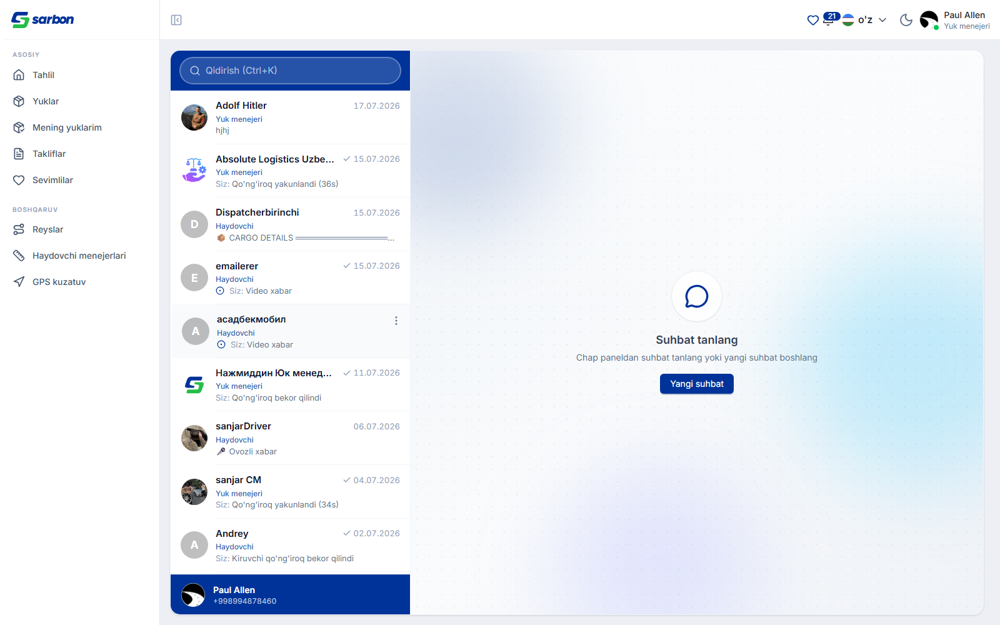
9 Проверка
| Гейт | Результат |
|---|---|
tsc -b (полная проверка типов проекта) | exit 0 |
vitest run | 1879 / 1879 (173 файла) |
eslint --max-warnings 0 (изменённые файлы) | чисто |
Кабинет компании — qa/verify-company-workspace.mjs | 18/18 разделов, 0 «сырых» ключей i18n |
| Локали | 15/15 (company.* / admin.* — en/uz/ru + плейсхолдеры) |
| Живой прогон (staging: admin + yuk-menejer) | 14 скриншотов, поведение подтверждено |
| Adversarial-ревью (3–4-lens Sonnet) на 15:58/17:19 | находки разобраны |
baa4d0a4«company update vehicle + 2bugs» — 13 live-эндпоинтов компании, скрытие автопарка для SHIPPER, редизайн списка, UI-полировка воркспейса, cargo-create температура + ASAP; новыеcompany{Payments,Dashboard,CargoActions}.ts,companyBlobDownload.ts,cargoTemperature.ts.2d753cbb«analitics» — дашборд: подписи на столбцах + бакет-переключатель, новыйactivityBucket.ts.f5a77039«Trip tarixi …» — трекер истории рейсов (эйбрау Event/Status, номера шагов, иконка итога в шапке).b3954c1c«Haydovchi holati dropdown …» — статус-зависимыйavailableModerationActions.8dcd4758«Чат ўчириш & Drivers filter UI» — чат-удаление/закрепление (deleteConversation.ts,chatPins.ts,useChatPinsStore.ts), админ фильтр-панель (adminDriverFilters.ts), гейт правки водителя (driverEditGate.ts).